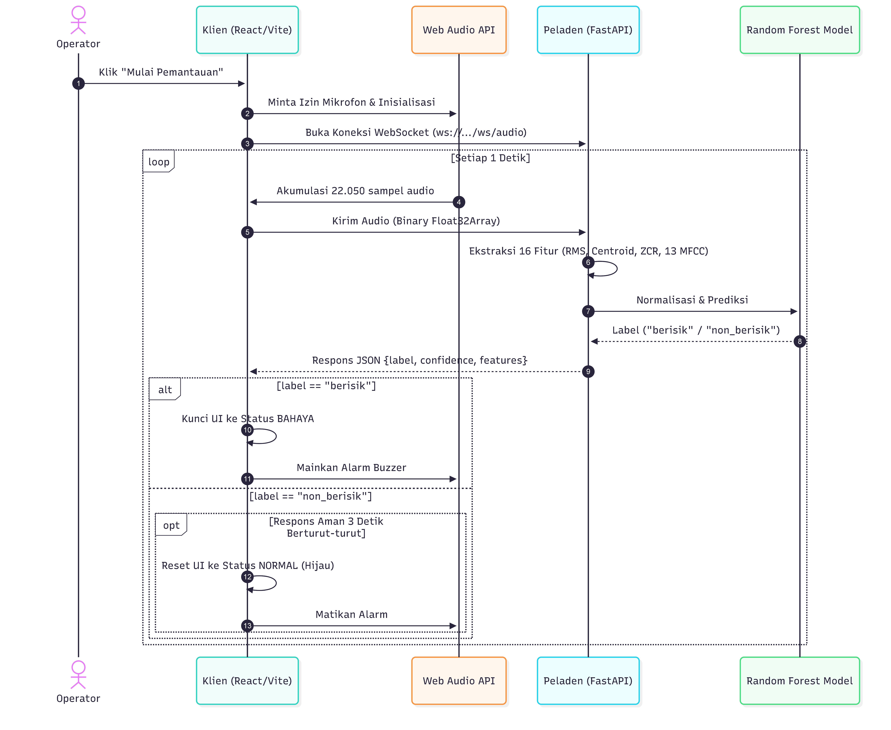

04 - Sequence Diagram (Interaksi Antarkomponen)#
Dokumen ini memodelkan interaksi pertukaran pesan antarobjek dan komponen perangkat lunak secara sekuensial berdasarkan garis waktu (chronological sequence).
Dua diagram sekuens disajikan untuk mencerminkan dua skenario operasional penting:
Skenario 1: Inisialisasi Sistem & Orkestrasi Server Ganda (Streamlit \(\rightarrow\) Flask).
Skenario 2: Siklus Inferensi Audio Real-Time & Pemicuan Alarm Suara Kebisingan.
1. Sequence Diagram 1: Orkestrasi & Startup Server Ganda#
Diagram ini menggambarkan bagaimana app.py memeriksa ketersediaan port dan menjalankan live_server.py di latar belakang sebelum menampilkan antarmuka pengguna.

2. Sequence Diagram 2: Siklus Inferensi Audio & Pemicuan Alarm Buzzer#
Diagram ini memetakan aliran data tingkat rendah (low-level data flow) saat pengguna mengaktifkan deteksi suara langsung hingga alarm berbunyi di peramban.
sequenceDiagram
autonumber
actor User as 👤 Pengguna
participant DOM as 🖥️ Halaman Klien (HTML/JS DOM)
participant WebAudio as 🎧 Web Audio API (ScriptProcessor & Analyser)
participant FlaskAPI as 🚀 Flask Endpoint (/api/classify_pcm)
participant DSP as 🎵 Librosa DSP Engine
participant Scaler as 📐 StandardScaler (scaler.pkl)
participant KNN as 🧠 KNN Model (knn_model.pkl)
participant Synthesizer as 🔊 Audio Synthesizer (Oscillator Buzzer)
User->>DOM: Klik Tombol "▶️ Mulai Deteksi Langsung"
activate DOM
DOM->>WebAudio: navigator.mediaDevices.getUserMedia({ audio: true })
activate WebAudio
WebAudio-->>DOM: Stream Mikrofon Aktif (MediaStream)
DOM->>WebAudio: Inisialisasi AudioContext(sr=22050), ScriptProcessor(4096), AnalyserNode
DOM-->>User: Perbarui UI: Status Mikrofon Hijau ("Aktif Mendengarkan")
loop Loop Kontinu Setiap Interval (Default 3 Detik = 66.150 Sampel)
WebAudio->>WebAudio: Event onaudioprocess: Tambahkan 4096 sampel ke bufferChunk[]
WebAudio->>DOM: Perbarui Progress Bar Buffer (Contoh: "1.5s / 3.0s")
alt Buffer Terkumpul >= CHUNK_SIZE
WebAudio->>DOM: Buffer Penuh -> Gabungkan ke Float32Array (66.150 floats)
DOM->>DOM: Reset bufferChunk = [] & Reset Progress Bar
DOM->>FlaskAPI: HTTP POST /api/classify_pcm (Payload: binary Float32Array.buffer)
activate FlaskAPI
FlaskAPI->>FlaskAPI: np.frombuffer(raw_bytes, dtype=np.float32)
FlaskAPI->>DSP: Ekstraksi 16 Fitur Akustik (librosa)
activate DSP
DSP->>DSP: rms = np.mean(librosa.feature.rms(y))
DSP->>DSP: centroid = np.mean(librosa.feature.spectral_centroid(y, sr))
DSP->>DSP: zcr = np.mean(librosa.feature.zero_crossing_rate(y))
DSP->>DSP: mfcc = librosa.feature.mfcc(y, sr, n_mfcc=13) (13 koefisien)
DSP-->>FlaskAPI: Vector 16 Fitur: [rms, centroid, zcr, mfcc_1 .. mfcc_13]
deactivate DSP
FlaskAPI->>Scaler: scaler.transform(feature_vector.reshape(1, -1))
activate Scaler
Scaler-->>FlaskAPI: scaled_vector (Z-Score Normalized)
deactivate Scaler
FlaskAPI->>KNN: knn_model.predict(scaled_vector) & predict_proba()
activate KNN
KNN-->>FlaskAPI: pred_code (0 atau 1) & pred_proba (Keyakinan %)
deactivate KNN
FlaskAPI->>FlaskAPI: Konversi pred_code via label_encoder -> 'berisik' / 'non_berisik'
FlaskAPI-->>DOM: HTTP 200 JSON Response: { label, confidence, features: { rms, centroid, zcr, mfcc_1 } }
deactivate FlaskAPI
DOM->>DOM: Perbarui Nilai Metrik di UI (RMS, Centroid, ZCR, MFCC 1, Latensi ms)
alt Hasil Prediksi: label == 'berisik'
DOM->>DOM: Ubah Tampilan Status ke Merah Berkedip: 🚨 BERISIK TERDETEKSI
opt Jika Toggle Alarm Aktif (chkSoundAlert == true)
DOM->>Synthesizer: playAlarmSound()
activate Synthesizer
Synthesizer->>Synthesizer: Buat OscillatorNode('sawtooth')
Synthesizer->>Synthesizer: Ramp Frekuensi: 900 Hz -> 450 Hz dalam 0.25 detik
Synthesizer->>Synthesizer: Ramp Gain: 0.4 -> 0.01 dalam 0.25 detik
Synthesizer-->>User: Bunyi Alarm Buzzer Seketika! 🔊
deactivate Synthesizer
end
DOM->>DOM: Tambahkan Catatan Merah ke #activityLog
else Hasil Prediksi: label == 'non_berisik'
DOM->>DOM: Ubah Tampilan Status ke Hijau Tenang: 🌿 NON-BERISIK
DOM->>DOM: Tambahkan Catatan Hijau ke #activityLog
end
end
end
User->>DOM: Klik Tombol "⏹️ Hentikan Pemantauan"
DOM->>WebAudio: scriptProcessor.disconnect(), mediaStream.getTracks().stop(), audioContext.close()
deactivate WebAudio
DOM->>DOM: Ubah Status UI ke Standby ("Pemantauan Dihentikan")
DOM-->>User: Tampilan Kembali Normal
deactivate DOM
3. Rincian Parameter Protokol & Komunikasi Data#
A. Kontrak Permintaan (Request Contract) — /api/classify_pcm#
Metode HTTP:
POSTHeader:
Content-Type: application/octet-stream
Body: Raw ArrayBuffer berisi data biner
Float32berurutan (Little-Endian).Ukuran Data: $\(\text{Ukuran Payload} = 22050 \times 3.0 \times 4 \text{ bytes (Float32)} \approx 264.600 \text{ bytes} \approx 258.4 \text{ KB}\)$
B. Kontrak Respons (Response Contract) — /api/classify_pcm#
Status Code:
200 OKFormat Payload:
application/jsonStruktur Objek JSON:
{
"label": "berisik",
"confidence": 100.0,
"features": {
"rms": 0.0845,
"centroid": 2450.31,
"zcr": 0.1287,
"mfcc_1": -145.2
}
}
Error Handling:
400 Bad Requestdengan{"error": "Buffer audio kosong"}jika payload kosong.400 Bad Requestdengan{"error": "Panjang sampel audio terlalu pendek"}jika sampel < 1024 titik.